Arrivée à Aix TGV
Récupérer la voiture à la gare même. Prévoir 25 à 35 min pour la prise en charge et les bagages.
Voiture à réserverTrois nuits pour fêter mon anniversaire avec toi. Un ancien couvent, une cabane dans les vignes, une grande table… et tout le temps de se retrouver.
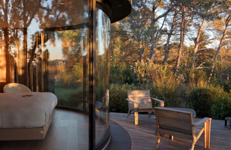
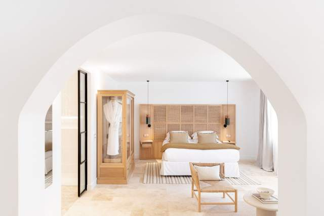
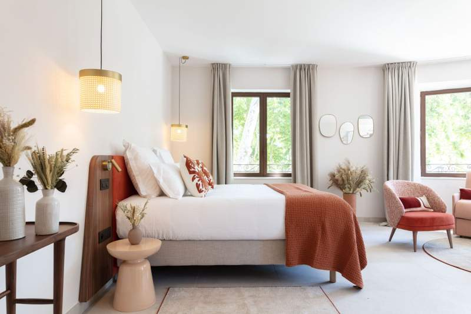
De la douceur du spa à la dernière coupe après le dîner étoilé : voici le fil de ces quatre jours ensemble.
Les horaires précédés de « ≈ » sont des repères. Les réservations confirmées sont signalées dans le détail.
Récupérer la voiture à la gare même. Prévoir 25 à 35 min pour la prise en charge et les bagages.
Voiture à réserverAix TGV → Couvent des Minimes : environ 1 h à 1 h 10, 90 km selon l'hôtel. Arrivée estimée vers 20 h 20–20 h 40.
Le bistrot du Couvent accueille le soir jusqu’à 21 h 15. Réserver une table tardive et prévenir de l’heure d’arrivée du train.
Dîner à confirmerProfiter du buffet, du bassin intérieur, du hammam et des saunas. Départ de la suite avant midi ; demander à prolonger l'accès spa après le check-out.
Table réservée pour deux. Cuisine du marché signée par l'équipe de Louis Gachet.
ConfirméDemande envoyée pour un soin en début d’après-midi après le déjeuner ; tarif envisagé 440 € pour deux. Horaire et prolongation du spa attendus.
Réponse de l’hôtel attendueCompter environ 1 h 10 à 1 h 20 depuis Mane, selon la circulation à l'approche d'Aix. Installation en chambre insolite.
Chambre confirméeDemande envoyée pour du room service depuis Le K ou La Source. L’hôtel confirme l’ouverture de ces tables le vendredi ; la possibilité de service en chambre reste à confirmer.
Réponse de la Gaude attenduePetit déjeuner et départ de la chambre avant midi. Direction le Provence Audio Show, à l’hôtel Renaissance, 256 avenue de Pérouse. Environ 15–20 min depuis la Gaude.
Marion peut profiter du centre ancien et des marchés, puis de l’exposition Henri Cartier-Bresson à l’Hôtel de Caumont.
Depuis le centre d’Aix, compter environ 20 à 30 min jusqu’à Calas-Cabriès. Suite réservée pour la dernière nuit.
Suite confirméeTable réservée pour deux au restaurant étoilé de l’hôtel. À la carte ou menu dégustation selon votre envie.
ConfirméLa Bastide annonce 5 min jusqu’à la gare. Garder une marge pour faire le plein et restituer la voiture ; viser une restitution vers 11 h 15.
Arrivée prévue à 15 h 22 selon l’itinéraire transmis.
Les points indiquent les lieux. Les lignes donnent le fil du voyage et ne représentent pas les routes exactes.
Les photos proviennent des galeries officielles des établissements ; les chambres précises peuvent varier au sein d’une catégorie.
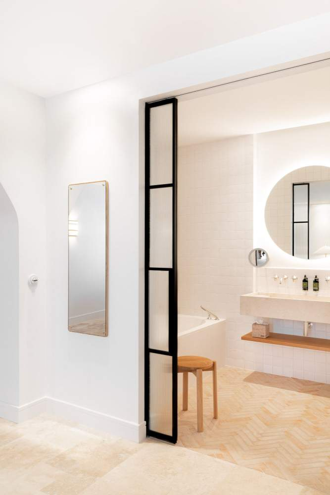
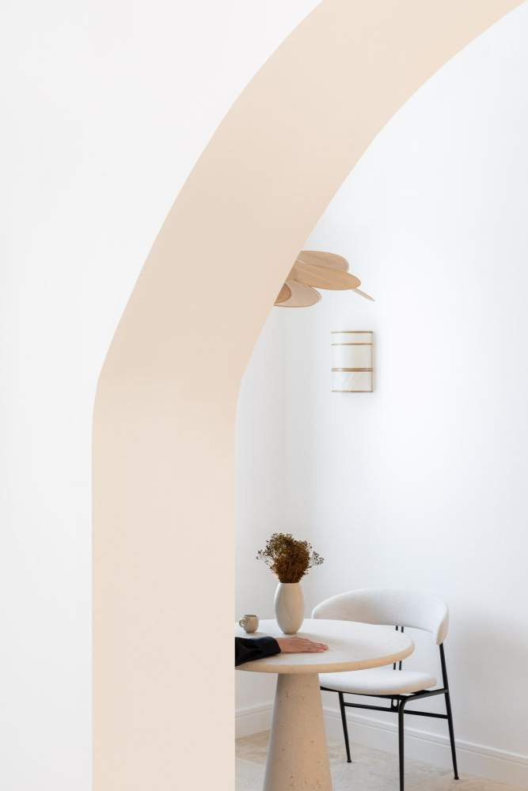
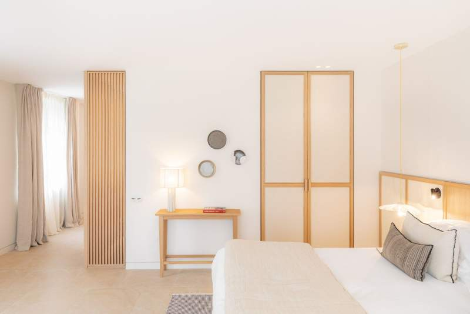
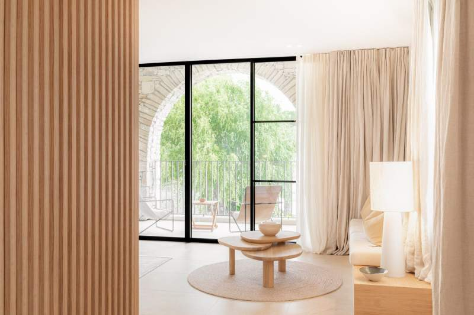
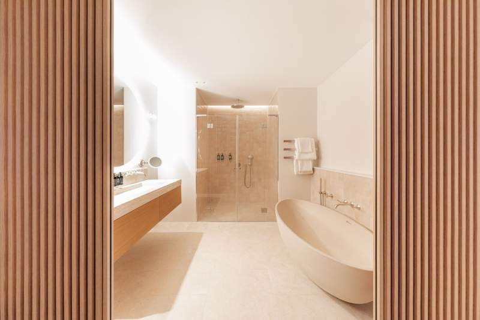
Suite Terrasse. Une nuit dans l'ancien couvent, salon séparé et loggia. Spa L’Occitane, dîner au bistrot et vendredi tout en douceur.
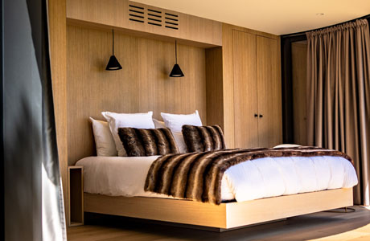
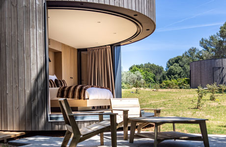
Chambre Double Insolite. Un cocon au milieu du domaine, comme tu le voulais depuis le début. Le modèle exact n’est pas précisé sur la confirmation ; les photos présentent les trois chambres du château.
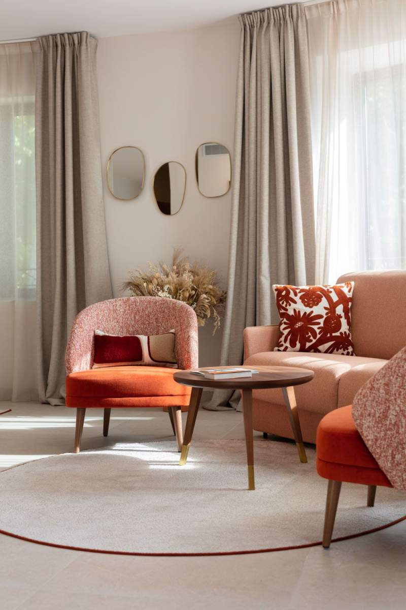
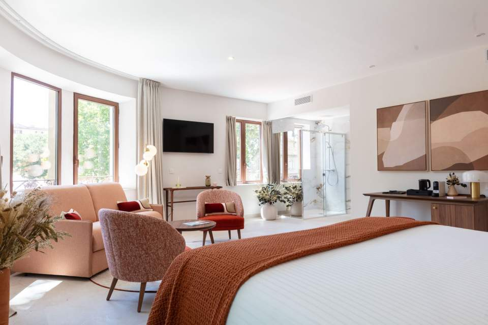
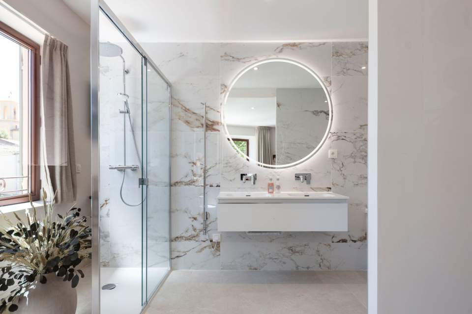
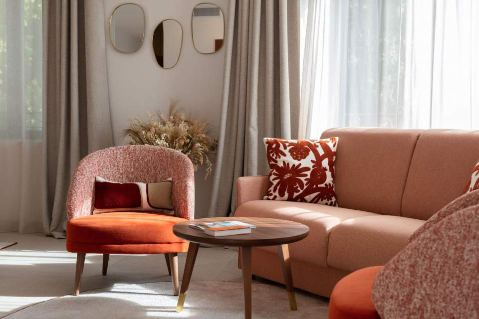
Suite. Dernière nuit dans une maison de caractère, avec le restaurant étoilé de Mathias Dandine directement sur place. Aucun trajet après le dîner.
Depuis le Renaissance, le centre est accessible à pied. Flânerie au marché de la place Richelme et sur le cours Mirabeau, puis exposition Henri Cartier-Bresson à l’Hôtel de Caumont (3 rue Joseph Cabassol, ouverte de 10 h à 18 h). Vous vous retrouvez ensuite pour partir vers la Bastide.
Prise en charge jeudi vers 19 h 10, retour dimanche vers 11 h 15. Choisir une agence ouverte après l’arrivée du train et autorisant le retour dimanche matin.
Confirmer le massage duo Karité Nutrition, son horaire après le déjeuner et l’accès au spa après le départ de la chambre.
Confirmer le room service depuis Le K ou La Source. Si impossible, réserver une table au K pour vendredi soir.